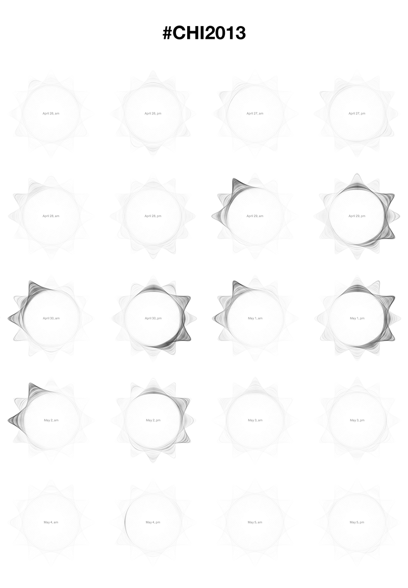
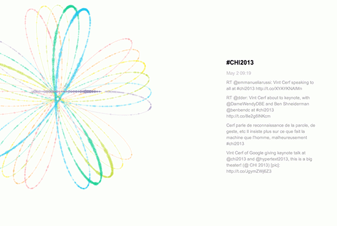

01/2013 - 05/2013
Design Project at Université Paris-Sud
Data Visualization, Eyetracker, User Study, Javascript
Spirograph Patterns

Tweets Visualizations


Using the Flower pattern for ten days’ tweets visualization.
The resulting visualization is appealing and efficiently shows Tweets distribution over time and trends both during short and long time spans. Those early results show that Spirographs can go beyond simple artworks and can effectively bear both attractiveness and structure, which make them perfect candidate for ambient display.
Spirographs web-based creation tool
01/2013 - 05/2013
Design Project at Université Paris-Sud
Data Visualization, Eyetracker, User Study, Javascript